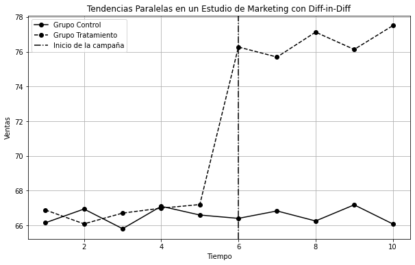

Diferencias en Diferencias#
No se si es casualidad que yo me sienta así cada que tu estás cerquita de mi
Efecto, de Bad Bunny
¿Qué pasa cuando no podemos hacer un experimento para identificar causas y efectos?
Si hay una lección que quiero que recuerdes sobre este libro es que en nuestra mente siempre debe de estar el experimento como forma ideal de identificar causalidad. Y cuando el experimento no sea posible de hacer, o sea muy caro, entonces recurrimos a los datos.
En otras palabras, buscamos un experimento natural.
Los economistas llamamos experimento natural a un evento que se parece mucho a un experimento, pero ocurre sin que nadie lo haya planeado. Un ejemplo clásico es el de Card & Krueger (1994), que midieron el efecto de un aumento en el salario mínimo en el empleo. La teoría neoclásica dictaba que el mercado laboral se debía comportar igual a cualquier otro mercado, con curvas de oferta y demanda. Si en lugar de bienes y servicios, el empleado está ofreciendo su trabajo, entonces un aumento en el salario mínimo debería tener como consecuencia una caída en el empleo.
Los datos indican que un aumento en el salario mínimo no tiene efecto alguno en el empleo.
Al enterarse de que habría un aumento en el salario mínimo en Nueva Jersey, los investigadores fueron a los establecimientos de comida rápida a recolectar datos. Registraron el número de empleados, salarios promedio y otros datos en Nueva Jersey y Pennsylvania. Hicieron registros en ambos estados antes y después de la implementación de la medida.
Los resultados se vieron así.
Pa |
NJ |
|
|---|---|---|
Empleo Antes |
23.33 (1.35) |
20.44 (0.51) |
Empleo Después |
21.17 (0.94) |
21.03 (0.52) |
Cambio en el Empleo Medio |
-2.16 (1.25) |
0.59 (0.54) |
La diferencia en diferencia sería:
Tomando los datos de la tabla
Es decir, el empleo parece incluso haber aumentado.
Pero con un error estándar de 1.36, no podemos estar seguros de que esos resultados sean causales. O bien, no hay efectos significativos.
Si queremos conocer el efecto real que tuvo el aumento en el salario mínimo, tenemos que tratar a Pennsylvania como un contrafactual. Lo que esto quiere decir es que los empleos en ambas ciudades se deberían comportar igual antes del tratamiento y, por lo tanto, Nueva Jersey hubiera tenido el mismo comportamiento que Pennsylvania si no se hubiera implementado el cambio.
Cuando tomas la diferencia en el tiempo y entre regiones, lo que te queda es el efecto causal.
El supuesto de las tendencias paralelas#
El elemento más importante en el modelo de Diferencias en Diferencias es el contrafactual.
En el estudio del salario mínimo, los autores fueron muy cuidadosos al seleccionar las ciudades que iban a comparar. Nueva Jersey y Pennsylvania son estados vecinos. La ciudad de Nueva Jersey y de Philadelphia están separadas únicamente por un puente. Esto permite que podamos asumir con mayor tranquilidad que los efectos que estamos observando no se puedan adjudicar a la cultura o al clima.
De manera visual, se vería algo así:
import numpy as np
import pandas as pd
import matplotlib.pyplot as plt
# Set random seed for reproducibility
np.random.seed(42)
# Parámetros
n_periodos = 10
n_control = 50
n_tratamiento = 50
tiempo_tratamiento = 6
efecto_publicidad = 10 # Efecto de la campaña publicitaria
# Periodos de tiempo
tiempo = np.arange(1, n_periodos + 1)
# Simulación de datos para el grupo Control (sin campaña publicitaria)
tendencia_control = 50 + 3 * tiempo # Tendencia lineal en ventas
datos_control = pd.DataFrame({
'tiempo': np.tile(tiempo, n_control),
'grupo': 'Control',
'ventas': np.repeat(tendencia_control, n_control) + np.random.normal(0, 5, n_periodos * n_control)
})
# Simulación de datos para el grupo Tratamiento (con campaña publicitaria)
tendencia_tratamiento = 50 + 3 * tiempo # Tendencia lineal en ventas antes del tratamiento
datos_tratamiento = pd.DataFrame({
'tiempo': np.tile(tiempo, n_tratamiento),
'grupo': 'Tratamiento',
'ventas': np.repeat(tendencia_tratamiento, n_tratamiento) + np.random.normal(0, 5, n_periodos * n_tratamiento)
})
# Aplicar el efecto de la campaña publicitaria después del tiempo de tratamiento
datos_tratamiento.loc[datos_tratamiento['tiempo'] >= tiempo_tratamiento, 'ventas'] += efecto_publicidad
# Combinar los datos
df_marketing = pd.concat([datos_control, datos_tratamiento])
# Graficar las tendencias paralelas con líneas negras y diferentes estilos
plt.figure(figsize=(10, 6))
# Graficar grupo Control (línea sólida negra)
plt.plot(df_marketing[df_marketing['grupo'] == 'Control'].groupby('tiempo')['ventas'].mean(), label='Grupo Control', marker='o', color='black', linestyle='-')
# Graficar grupo Tratamiento (línea punteada negra)
plt.plot(df_marketing[df_marketing['grupo'] == 'Tratamiento'].groupby('tiempo')['ventas'].mean(), label='Grupo Tratamiento', marker='o', color='black', linestyle='--')
# Resaltar el tiempo de la campaña publicitaria (línea discontinua negra)
plt.axvline(x=tiempo_tratamiento, color='black', linestyle='-.', label='Inicio de la campaña')
# Etiquetas y título
plt.title('Tendencias Paralelas en un Estudio de Marketing con Diff-in-Diff')
plt.xlabel('Tiempo')
plt.ylabel('Ventas')
plt.legend()
plt.grid(True)
# Mostrar gráfico
plt.show()

En el ejemplo que te estoy mostrando, hicimos una simulación de una campaña de mercadotecnia.
Para conocer el efecto verdadero de una campaña, necesitamos que exista un contrafactual. En otras palabras, debe haber algo con qué comparar la tendencia de las ventas. Ese pico que observamos en las ventas podría ser parte natural de un ciclo, o podría ser parte de un boom general en la economía.
Incluir un grupo de control nos da certeza de que ese incremento se debe a la campaña y no a otros factores.
Elaborado en el ejercicio de año sabático UJED